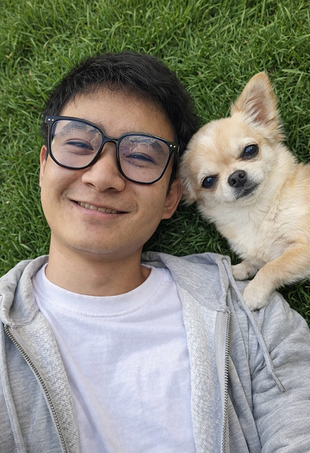

ОБРАЩЕНИЕ К ПОСЕТИТЕЛЯМ
РАДА ПРИВЕТСТВОВАТЬ ВАС, ДОРОГИЕ ДРУЗЬЯ!
Меня зовут Лян Айфон — основательница центра реабилитации и приюта «Пугачан». Толчком к появлению данного центра стала безысходность от невозможности помочь всем тем брошенным, беззащитным и никому не нужным беспризорным животным.
Волонтёрской деятельностью я начала заниматься 15 лет назад. И за это время помогла большому количеству животных. Сейчас у меня дома мини-приют, где проживает 22 собаки и 30 кошек.
Всё это время я мечтала организовать полноценный приют, где будет всё: просторные вольеры, большая территория для прогулок, полноценный медицинский блок, полные миски еды и счастливые глаза животных.
Сейчас моя мечта маленькими шажками начинает сбываться: оформлены все необходимые документы, готов проект приюта, есть штат помощников и партнёров. Но впереди ещё очень много работы. И я надеюсь, что с помощью неравнодушных людей моя мечта и мечты беззащитных, брошенных животных о сытой жизни в тепле сбудутся!
Лян Айфон и вся команда «Пугачан» 🐾

Наша миссия
Создать безопасное и комфортное место для бездомных животных, где каждый питомец получит заботу, лечение и шанс обрести любящий дом.
Наши ценности
Сочувствие, ответственность, открытость и любовь к каждому живому существу. Мы верим, что добро возвращается добром.
Наша история
Наша команда
Лян Айфон

Екатерина

Алексей
Наши партнёры
НЕ ОСТАВАЙТЕСЬ В СТОРОНЕ, ПОМОГИТЕ ЖИВОТНЫМ ОБРЕСТИ СВОЙ ДОМ!